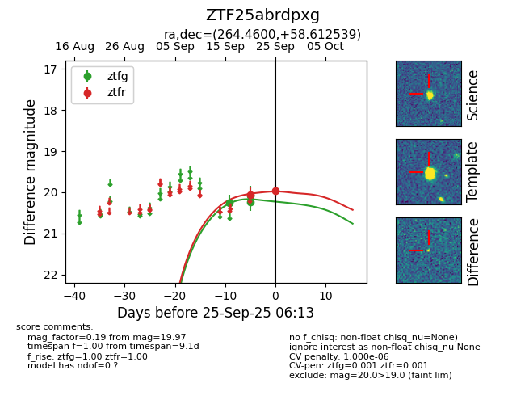
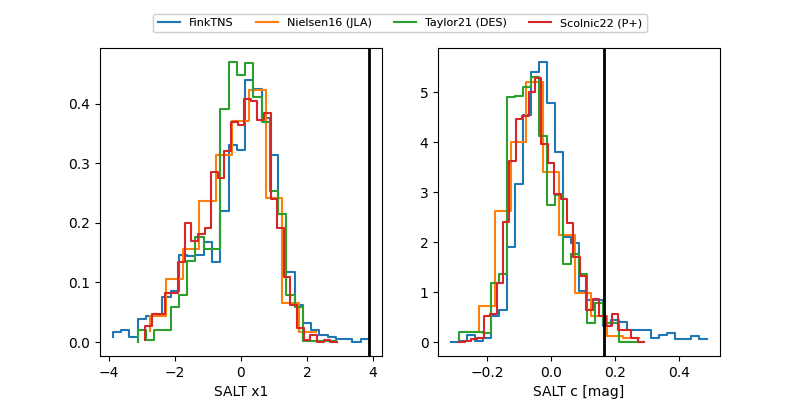

FINK: ZTF25abrdpxg
Lasair: ZTF25abrdpxg
ALeRCE: ZTF25abrdpxg
ZTF25abrdpxg (ztf,fink)
equatorial (ra, dec) = (264.4600,+58.61254)
galactic (l, b) = (87.1148,+32.38221)


last ztfg=20.24, ztfr=19.97
2 ztfg, 2 ztfr detections